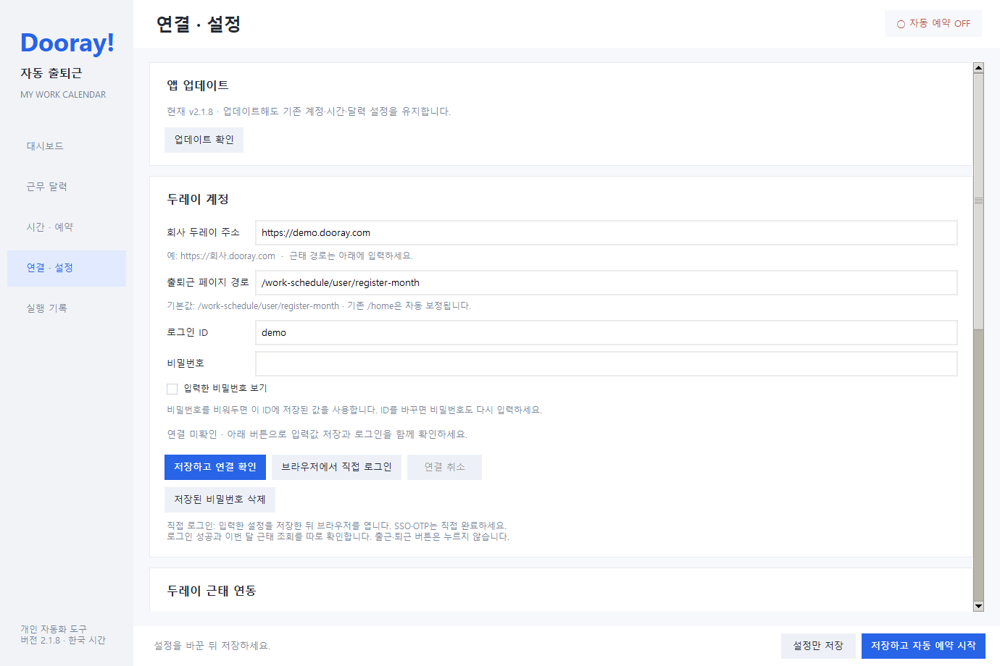
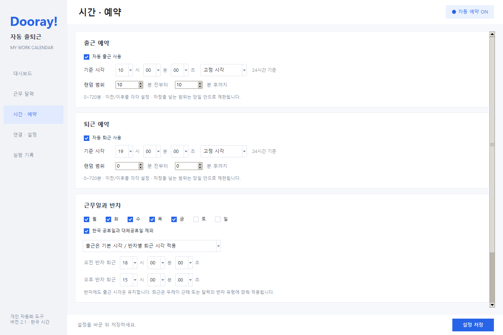

01. 설치 파일 받기
- GitHub 최신 릴리스를 엽니다.
- Assets에서 DoorayAutoCheckin-v버전-windows.zip을 받습니다. 소스 코드를 담은
-source.zip과는 다른 파일입니다. - 받은 ZIP을 원하는 폴더에 압축 해제한 뒤 설치.bat을 실행합니다.
- 필요한 Chromium 준비와 설치가 완료되면 프로그램을 실행합니다. 최초 설치에는 인터넷 연결이 필요합니다.
Python을 따로 설치할 필요는 없습니다. 프로그램과 사용자 설정은 %LOCALAPPDATA%\DoorayCheckin 아래에 저장됩니다.
02. 회사 계정 연결하기
- 왼쪽 메뉴의 연결 · 설정을 엽니다.
- 회사 두레이 주소를
https://회사.dooray.com형태로 입력합니다. 회사 주소에 페이지 경로를 붙이지 않습니다. 출퇴근 페이지 경로와 본인 월별 근태 경로는 모두/work-schedule/user/register-month가 기본값입니다. - 회사 웹에서 사용하는 로그인 ID와 비밀번호를 입력합니다.
- 저장하고 연결 확인을 누르고 화면 아래에 표시되는 결과를 확인합니다.

연결 확인은 로그인과 출퇴근 화면, 근태 조회를 점검하며 출퇴근 기록은 만들지 않습니다. SSO·OTP 등 추가 인증이 있으면 브라우저에서 직접 로그인을 사용하세요. 비밀번호를 비워두면 현재 ID에 저장된 비밀번호를 사용합니다.
03. 시간 설정 후 자동 예약 시작하기
- 시간 · 예약에서 출근·퇴근 각각의 자동 예약에 포함 여부를 선택합니다.
- 기준 시각을 시·분·초 드롭다운으로 고릅니다.
- 고정 시각 또는 랜덤 범위를 선택합니다. 랜덤 범위는 기준 시각의 이전·이후를 각각 분과 초로 설정합니다.
- 근무 요일과 공휴일 제외 여부를 확인합니다.
- 하단의 저장하고 자동 예약 시작을 누릅니다.
- 상단에 자동 예약 실행 중이 나타나고 대시보드에 오늘의 선택 시각이 표시되는지 확인합니다.
PC가 켜져 있고 Windows에 로그인된 상태여야 합니다. 자동 예약을 켜 두면 앱 창을 닫아도 감시 프로그램은 유지됩니다.

랜덤 시각은 범위 안의 모든 초 중 하나를 선택합니다. 설정이 같으면 같은 날 앱을 재시작해도 선택 시각은 유지됩니다. 예약 시각은 처리 시작 시각이며, 접속과 로그인 이후 실제 기록이 남으므로 특정 초의 기록을 보장하지 않습니다.
04. 연차·반차와 날짜별 예외 설정하기
근무 달력 → 이번 달 근태 가져오기로 본인 근태를 갱신합니다. 연차·휴가, 오전 반차, 오후 반차를 색상으로 확인할 수 있습니다.
- 휴가·반차를 자동 예약에 적용: 달력 아래 두레이 근태를 자동 예약에도 반영을 체크한 뒤 저장합니다.
- 반차 퇴근 시각: 시간 · 예약에서 오전·오후 반차별 퇴근 시각을 지정합니다. 출근은 원래 설정을 유지합니다.
- 대체근무일이나 별도 휴무: 달력에서 날짜를 선택하고 근태 유형, 출근·퇴근 ON/OFF 또는 시각을 직접 지정한 뒤 저장합니다.
날짜별 직접 설정이 두레이 근태보다 우선합니다. 전체 출근 또는 퇴근 예약이 꺼져 있으면 날짜별 ON만으로 실행되지 않습니다. 두레이 근태 조회는 현재 월을 대상으로 하며 다른 달은 수동으로 설정할 수 있습니다.
05. 앱에서 업데이트하기
- 연결 · 설정 → 업데이트 확인을 누릅니다.
- 새 버전이 있으면 다운로드 및 설치를 누릅니다.
- 공식 GitHub 배포 파일을 내려받아 SHA-256을 검사한 뒤 설치합니다. 앱이 종료되고 새 버전으로 다시 열립니다.
기존 계정·비밀번호·시간·달력·예약 ON/OFF를 유지합니다. 이전 실행 파일과 설정은 %LOCALAPPDATA%\DoorayCheckin\backups에 백업됩니다. 앱 내 업데이트는 2.1.3부터 지원하며, 더 오래된 버전은 최신 Windows ZIP을 받아 설치.bat으로 업데이트하세요.
문제가 생겼을 때
LOGIN_UNCONFIRMED 이후 자동 재시도가 중지됐어요
2.1.9로 업데이트하세요. 로그인 완료를 확인하지 못한 일시적 오류는 영구 차단하지 않고 설정된 횟수·간격으로 재시도합니다. 구버전의 해당 차단도 다음 자동 접속 시 복구합니다. 제한 시간이 끝나기 직전에 로그인됐을 때도 실제 성공 상태를 마지막으로 확인합니다. 비밀번호 오류·계정 잠금·추가 인증이 확인되면 기존처럼 중단합니다. 이미 놓친 과거 출퇴근 기록은 자동으로 소급 생성하지 않습니다.
로그인이 되지 않아요
회사 주소와 로그인 ID, 비밀번호를 다시 확인하고 ‘저장하고 연결 확인’을 누르세요. SSO·OTP는 ‘브라우저에서 직접 로그인’을 사용합니다. 계정 입력란 아래에 표시되는 오류 코드와 안내를 확인하세요. 오류 코드별 안내
웹 로그인은 됐는데 앱이 계속 기다려요
2.1.9로 업데이트하고 ‘저장하고 연결 확인’을 누르세요. 기존 /home 설정은 /work-schedule/user/register-month로 자동 보정됩니다. /home에는 출퇴근 버튼이 없을 수 있습니다. 로그인 뒤 메일·프로젝트로 이동한 경우 출퇴근 페이지로 이동해 다시 확인합니다. 직접 로그인에서는 열린 창에 사용자가 ID·비밀번호를 입력해야 합니다. 계속 실패하면 연결 확인을 다시 실행한 직후 최신 진단 도구 v3로 수집하세요.
시간을 저장했는데 예약이 실행되지 않아요
‘자동 예약에 포함’과 ‘자동 예약 실행 중’ 표시를 확인하세요. 오늘 날짜의 휴가·공휴일·수동 OFF도 확인해야 합니다. PC가 꺼졌거나 절전 상태였다면 예정 시각에 실행되지 않을 수 있습니다. 실행 기록 메뉴에서 당시 로그를 확인하세요.
출근·퇴근 점검을 눌렀는데 기록이 없어요
‘출근 점검 (기록 없음)’과 ‘퇴근 점검 (기록 없음)’은 실제 기록을 만들지 않습니다. 지금 처리하려면 ‘지금 출근’ 또는 ‘지금 퇴근’을 누르고 확인창을 거쳐야 합니다.
다른 PC에서 실패한 로그를 전달하고 싶어요
최신 릴리스의 Dooray-diagnostics-tool.zip을 실패한 PC에서 풀고 ‘진단로그수집.bat’을 실행하세요. 바탕화면에 진단 ZIP이 생성됩니다. 도구는 비밀번호·로그인 세션·스크린샷·원본 설정을 수집하지 않으며 자동 전송하지 않습니다. 공유 전에 내용을 확인하고 비밀번호나 원본 설정 파일을 공개 이슈에 붙이지 마세요.